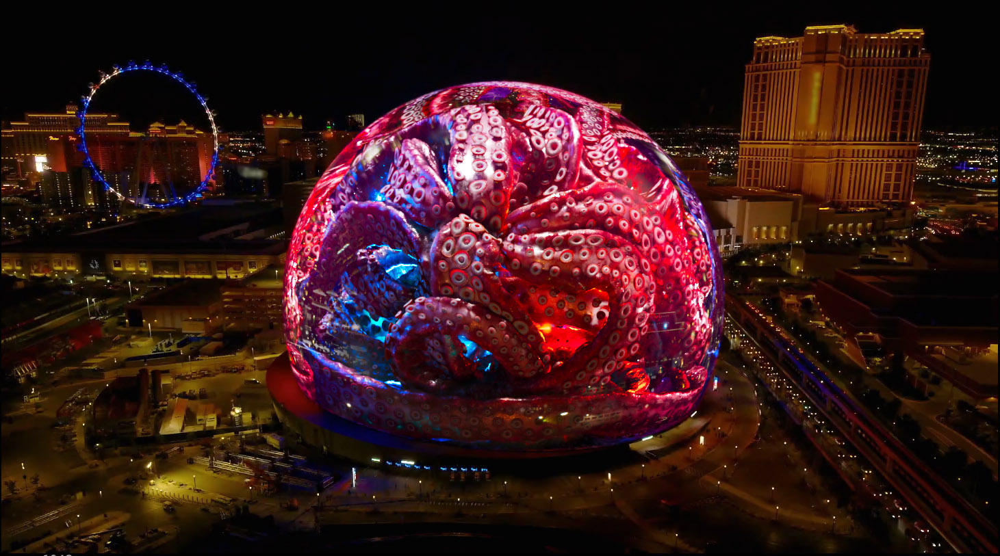

While working at The Mill, I was on a team that worked on a joint Marvel/Autodesk ad for the Sphere in Las Vegas, that showcases Goose the Flerken and all of her tentacles. I did the lighting and rendering for Goose, the tentacles, and some glass reflection passes, and I also did some shader and texture work on the tentacles.
|  |
The tentacles were probably the biggest challenge for lighting. For the lighting on Goose, I closely followed a provided reference, but we didn't have a lighting reference for the tentacles so I did a lot of experimenting in the beginning. The Goose lighting setup didn't really look good on the tentacles because the lighting was supposed to come from the FX within the sphere, and the tentacles would block that. Ultimately, the solution was to crank up the subsurface scattering on the tentacles to let more light come through, fake some red and blue lighting from the outside, and overall get a more stylized and interesting result.
Here is a short behind the scenes video from Autodesk to promote the Maya portion of the pipeline. I used Maya for the shader work on the tentacles. My tentacle texture adjustments were done in Substance Painter, and the lighting was actually done in Houdini.
Overall this was a really cool project to work on and the team I worked with was amazing!

{kind=link}
{kind=link}
{kind=link}